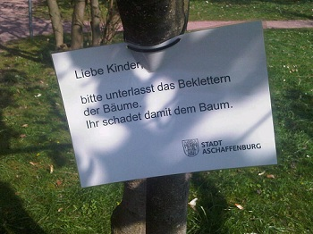
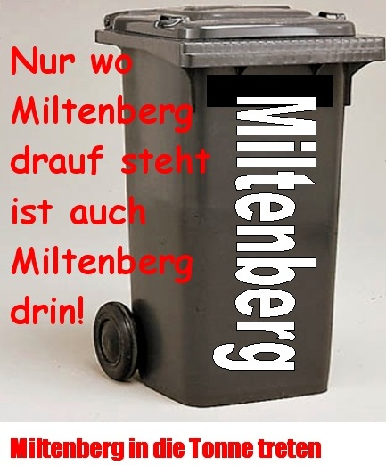

von Attac AB-MIL
Die Veranstaltung am Donnerstag, 3. April im „Stern“ Aschaffenburg kann leider nicht in der angekündigten Form stattfinden. Der Referent Tomasz Konicz hat aus gesundheitlichen Gründen abgesagt.
von Attac AB-MIL
Die Veranstaltung am Donnerstag, 3. April im „Stern“ Aschaffenburg kann leider nicht in der angekündigten Form stattfinden. Der Referent Tomasz Konicz hat aus gesundheitlichen Gründen abgesagt.
Kurzbericht und Kommentar von Martin Bayer
Sieger bei der Stichwahl zum Landrat des Kreises Miltenberg:
Jens Marco Scherf (SPD, Grüne, ödp) mit 50,05 %!
Verlierer: Michael Berninger (CSU)
Wahlbeteiligung: 44,44 %
Sieger bei der Stichwahl in der Kreisstadt Miltenberg (Bürgermeister):
Helmut Demel (Liberale Miltenberger, SPD, Miltenberger Wahlgemeinschaft) mit 53,16 %
Verlierer: Harald Blankart (CSU)
Wahlbeteiligung: 53,48 %
Wahlen machen keine Veränderung ums Ganze. Meist bleibt nachher aufgrund der von allen anerkannten „Sachzwänge“ und der realen Verteilung der Macht (bei den ökonomischen Entscheidungsträgern) alles beim Alten. (mehr…)
Fotos: Mapec
Angelina „hanaMan“ Klug hat bis zur neuen Ausstellung ab 12. April die Kunsthaltestelle unterhalb des Aschaffenburger Schlosses sehr schön bunt gestaltet.

aus: Verfassungsschutzbericht Bayern 2013 (München, März 2014)
Rechtsextremistisch motivierte Gewalt richtet sich darüber hinaus auch gegen den politischen Gegner, insbesondere gegen Personen, die sich gegen Rechtsextremismus engagieren sowie gegen linksextremistische Antifaschisten: Am 30. Mai skandierten mehrere unbekannte Personen in Aschaffenburg rechtsextremistische Parolen. Ein 35-Jähriger forderte sie auf, dies zu unterlassen. Daraufhin schlugen die Täter ihn und seinen Begleiter zu Boden und traten auf sie ein.
…
Der JN-Bundesverband verschickte im September mit Unterstützung der NPD bundesweit Schreiben an Politiker und Vertreter von Migrantenverbänden, denen Kondome beigelegt waren. Den Empfängern sollte dadurch signalisiert werden, sich nicht fortzupflanzen. Die Botschaft weist Parallelen zur Politik der Rassenhygiene im Nationalsozialismus auf. Mitte September erhielten auch einige Aschaffenburger Stadträte entsprechende Schreiben des NPD-Kreisverbandes Aschaffenburg/Miltenberg.
Erwähnt wird unter „Vertriebe und Versandhandel“ auch der Last Resort Bessenbach von Dominik Wensauer.
Unter Ring Nationaler Frauen (RNF, Sitz Egeln in Sachsen-Anhalt) wird die Bundes-Vorsitzender Sigrid Schüßler erwähnt, hier am Untermain hinreichend bekannt.
von Blockupy Aschaffenburg
Blockupy-Bündnis in Aschaffenburg gegründet
Eine Woche vor den Wahlen zum Europaparlament ruft das bundesweite Blockupy-Bündnis in vielen Städten Europas zu internationalen Tagen des Widerstandes (15. bis 25. Mai) gegen die Politik von EU und Troika auf. Die Aktionstage sollen sowohl ein starkes Zeichen des Widerstands gegen die autoritäre Krisenpolitik und kapitalistische Ausbeutung setzen als auch die grenzüberschreitende Solidarität und die zunehmende Vernetzung europäischer Initiativen sichtbar machen.
„Mit dem in Aschaffenburg gegründeten Bündnis wollen wir uns an der Regionalisierung des Netzwerks beteiligen, auch hier vor Ort Widerstand sichtbar machen und für die Proteste anlässlich der Eröffnung des neuen EZB-Gebäudes im Herbst mobilisieren“, (mehr…)
von miba und mb
Foto: miba
Es soll Zeiten gegeben haben, da war es normal, dass Kinder auf Bäume kletterten. Jetzt sieht der stille Betrachter oder die erstaunte Betrachterin diese Schilder massenweise im Schöntal-Park in Aschaffenburg:

Wir möchten die Warnung erweitern: Liebe Kinder, bitte nicht atmen, das sondert schädliches CO2 ab!
Nach Blumensamen und Guerilla Gardening jetzt die nächste Aktion auf dem Weg zur Revolte: Graffiti für Anfänger!
Aber kein Grund zur Aufregung. Der Workshop richtet sich an Kinder und Jugendliche ab 12 Jahren und gemalt wird nicht auf Hauswände sondern auf Leinwand. Trotzdem eine gute Sache!
von www.kunstnetz-mil.de:
Zu Beginn des Workshops werden verschiedene Styls von Schriften ausprobiert und als Skizze zu Papier gebracht. Anschließend wird der Entwurf von den Teilnehmern auf eine große Leinwand übertragen, um ihn dann im typischen Graffiti-Stil farbig zu gestalten. Nach Abschluss des Workshops werden die entstandenen Werke der Teilnehmer ausgestellt. Nach Ausstellungsende werden die Werke an Euch übergeben.
Alter: ab ca. 12 Jahre
Termin: Samstag, 29.03.2014, 10 – 16 Uhr
Wo: Miltenberg, Schirmerstraße 12, Klangfabrik
Mitzubringen: 1 schwarzer Fineliner, 1 Bleistift, Radiergummi, geeignete Kleidung
Kosten: Kursgebühr 20 €, Materialkosten 12 €
Anmeldeschluss: 27. März
Schriftliche Anmeldung über das KUNSTNETZ
Infos unter: 09371/501-506
von http://bgeab.blogsport.eu/
Ein anarchistischer Abend mit leicht unzüchtigem Charakter.
Ungehorsam und unbeugsames Aufbegehren gegen die Obrigkeit zogen sich wie einer roter Faden durch das Leben des Schriftstellers und Anarchisten Erich Mühsam.
Inspiriert von revolutionären Ideen widmete sich Mühsam, sein Leben lang, in Wort und Schrift, der Ablehnung jedweder Autorität, der Solidarität mit den von Unterdrückung und Ausbeutung Betroffenen und der Überwindung kleinbürgerlicher Verhältnisse.
Doch auch die Liebe zur Freiheit und die Lust an Rausch und Leben kamen in seinen Werken nicht zu kurz. Mühsam wurde am 10.07.1934 von SS-Schergen im Konzentrationslager Oranienburg ermordet. Seine Unbeugsamkeit wurde zu einem Symbol des antifaschistischen Widerstands.
Seine Texte und Gedichte finden bis heute Verbreitung und wurden in unterschiedlichsten Stilen vertont. Einen Teil seiner Werke wollen wir an diesem Abend unseren Gästen zugänglich machen.
Für Unterhaltung und Rausch sorgen Erich Mühsam Vertonungen in akustischen Gewand und süffige Rotweine eines Winzerkollektivs aus Norditalien.
Samstag, 29. März
20:00 Uhr
„Stern“, Platanenallee 1, Aschaffenburg
von http://bgeab.blogsport.eu/
Der gebürtige Aschaffenburger Peter Gingold, gestorben 2006, war ein kommunistischer Widerstandskämpfer gegen den Nationalsozialismus. Trotz zahlreicher Rückschläge und Anfeindungen hat er die Hoffnung auf eine bessere Gesellschaft nie aufgegeben. Seine Aufgabe sah er darin, mit allen überlebenden Opfern des Nationalsozialismus daran zu arbeiten, dasß ein anderes Deutschland entstehe und sich Auschwitz nie mehr wiederhole. Gezeigt wird der Dokumentarfilm „über Werk und Wirkung von Ettie und Peter Gringold“.
Mittwoch, 2.April
Einlass: 19 Uhr – Filmstart: pünktlich um 19:30 Uhr
„Stern“, Platanenallee 1, Aschaffenburg
Esther Bejarano (89) ist eine der letzten Überlebenden des Mädchenorchesters im KZ Auschwitz. Sie ist Mitbegründerin und Vorsitzende des Auschwitzkomitees, Ehrenvorsitzende der Vereinigung der Verfolgten des Naziregimes (VVN-BdA) und Trägerin der Carl-von-Ossietzky-Medaille. Am 26.April 2012 erhielt sie das Große Bundesverdienstkreuz. Esther Bejaranos Vita spiegelt sich in ihrer Musik wider. Zusammen mit der Hip-Hop Band „Microphone Mafia“ bringt sie Menschen aus drei Generationen sowie aus Judentum, Christentum und Islam, gegen Rechtsextremismus und für Solidarität auf die Bühne. Kutlu Yurtseven und Rosario Pennino, die Sänger von Microphone Mafia, verarbeiten ihre Erfahrungen als „Jugendliche mit Migrationshintergrund“ in ihren Raps auf Deutsch, Türkisch und Italienisch.
Es laden ein:
attac Aschaffenburg
Bündnis gegen Rechts
Gew. Erziehung u. Wissenschaft
Stadtjugendring Aschaffenburg
Eintritt: Eintritt 5,- Euro (ermäßigt 1,- Euro)
Am: Mi., 30. April 2014,
Ort: „JuKuZ“, Aschaffenburg Kirchhofweg 2
Beginn: 20:00 Uhr
Administrator
Update 19.03.14: wieder erreichbar!
-----------
Derzeit ist die Emailadresse von kommunal nicht erreichbar. Bitte schickt uns einfach einen Kommentar auf diesen Beitrag, wenn Ihr uns etwas schreiben wollt.
Zusammenstellung: mb & miba
Kreistag Miltenberg:
„Der schwarze Block hat keine Mehrheit mehr in Kreistag. Aus dem bisherigen Patt zwischen CSU und Neuer Mitte auf der einen und allen anderen Fraktionen und Gruppierungen auf der anderen Seite ist eine Mehrheit für das »bunte« Lager geworden. Die CSU hat gegenüber ihrem Ergebnis von 2008 noch einmal drei Prozent verloren und ist auf 39,1 Prozent abgerutscht. Die Neue Mitte vermag das nicht auszugleichen. Sie legt zwar 1,4 Prozent und zwei Mandate zu, kann aber damit ihre selbst gewählte Rolle als Mehrheitsbeschafferin für den Landrat nicht ausfüllen. Spielstand Schwarzer Block gegen Regenbogenkoalition: 28 zu 32.“ (main-netz.de, 18.03.14)
„Die Sozialdemokraten haben ihren Verzicht auf einen eigenen Landratskandidaten und die Unterstützung des grünen Bewerbers Jens Marco Scherf mit dem Verlust von zwei Mandaten bezahlt.“ (ebd.)
„Stimmenkönig [bei der Neuen Mitte] ist Günther Oettinger. Ob er nach seinem Bruch mit der CSU in der politischen Kreistagsarbeit andere Akzente setzt als die bisherige Troika Stappel-Fischer-Klimmer ist eine offene Frage. Ganz so selbstverständlich Hand in Hand mit der CSU wird die Neue Mitte in der veränderten Zusammensetzung aber wohl nicht mehr gehen.“ (ebd.)
CSU, 39,10 Prozent, 23 Sitze
FW, 18,06 Prozent, 11 Sitze
SPD, 17,38 Prozent, 10 Sitze
Grüne, 8,95 Prozent, 5 Sitze
Neue Mitte, 7,49 Prozent, 5 Sitze
FDP, 4,90 Prozent, 3 Sitze
ÖDP/BLU, 4,12 Prozent, 3 Sitze
Wahlbeteiligung: 60,4 %
Wahlbeteiligung in der Stadt Miltenberg: 55,5 %
Zum Vergleich die Wahlbeteiligung in der Stadt Aschaffenburg: 37,1 %
Umso größer die Stadt, um so geringer die Wahlbereitschaft. Und das bei der Wahl, bei der es eigentlich am direktesten zu entscheiden gilt.
mb
kommunal ist jetzt wieder bei Facebook regelmäßig aktiv.
von mb
Foto: Archiv kommunal

Zuerst hielten wir es für eine Wahlurne, dann merkten wir: Huch, das ist ja eine Mülltonne. Na egal, dachten wir uns, hier in MIL ist das eh alles eins.
Wer sich dennoch für den Ausgang des Wählens interessiert, der/die kann sich beim Main-Netz ab morgen, 18 Uhr informieren.
von Snowflakecakebite.blogspot.com
„… in seinem Königreich Kleinstadt … ich geh vor das Haus von Joachim Bieber / grins ihn an / und dann zünd ich mein Weed an …“
Andi Macht nennt sich der Solist bzw. das Projekt, das sich rappend mit dem Miltenberger Bürgermeister und der Situation in der Kleinstadt auseinandersetzt. Veröffentlich wurde das Teil von Snowflakecakebite. Danke!
Heute wurde uns aus Mömlingen nachstehende Meldung zugesandt.
Um die Faschingszeit sind in ganz Mömlingen Aufkleber eines faschistischen Webradios und der Jugendorganisation der NPD verklebt worden.
Ausserdem gab es eine Faschingsfeier im lokalen Schützenheim, bei welchem auffällig viele Neonazis anwesend waren.
Desweiteren sind zwei Nazi-Glatzen mit einer weiblichen Begleitung auf einer Faschingsfeier beim Fussballverein Viktoria Mömlingen mit SS-Uniformen ohne Abzeichen aufgetaucht und wurden wohl erst zu später Stunde zum Gehen aufgefordert. Bei einem dieser Personen soll es sich um ein Mitglied im Kader des Fussballvereins handeln.
Augen auf! Wehrt euch gegen Neonazis!
von Michael Baumann
Umwelt hin oder her: Wir lieben die neuen Einwegplakate. Die bedruckte Plaste ist zum Wegschmeißen unökologisch. Und dennoch: Noch nie saßen so viel Politiker hinter Gittern wie heute.
(Gesehen in Miltenberg)
von Spacestachel
Zuckerstern. Was nach einem übertrieben-süßem Weihnachtsgebäck klingt, entpuppt sich auf den zweiten Blick als das neue Baby von SunsetSoundRecords; denn dort, wo KBF Revolte nach ihrer Auflösung eine Lücke in der regionalen Electro-Szene hinterlassen haben, ist die Stille nur von kurzer Dauer. „Rosa-rot-pink, kitschig, autonom, durchtrainiert und einfach super sexy“ kommt die erste Online-Veröffentlichung, absolut tanzbar und mit wunderschönen Melodien daher. „Ein Stern geht auf“ nennt sich das Machwerk, lässt sich auf Soundcloud anhören und downloaden. Natürlich vollkommen kostenlos. Eine freundschaftliche Verbindung zum ehemals Miltenberger DIY-Label Trashrave Records lässt sich dabei anhand des Remix eines alten KBF Revolte-Songs und den Liebesbekundungen der Einhornherde erahnen. Auch wenn noch nicht mit Liveauftritten zu rechnen ist, wünscht die kommunal-Redaktion gutes Gelingen und hofft auf weiter Veröffentlichungen.
Foto: zugesandter Link

Claus und Klaus meint wohl den Grünen Kandidaten Claus Berninger und den Oberbürgermeister Klaus Herzog.
Zur AfD in Aschaffenburg gibt es einen Beitrag in analyse & kritik.
Ein Besucher hat eine kurze Meldung hinterlassen, die wir für anregend halten:
Seitdem Claus B seine Grünen-Werbung streut und in den Stadtrat will, hat er doch glatt seine „Antifa Glosse“ von seinem Blog genommen: http://blog.colos-saal.de/
War es Einsicht? Kritische Reflektion? Ich sage: Nö, einfach nur Wahlk(r)ampf